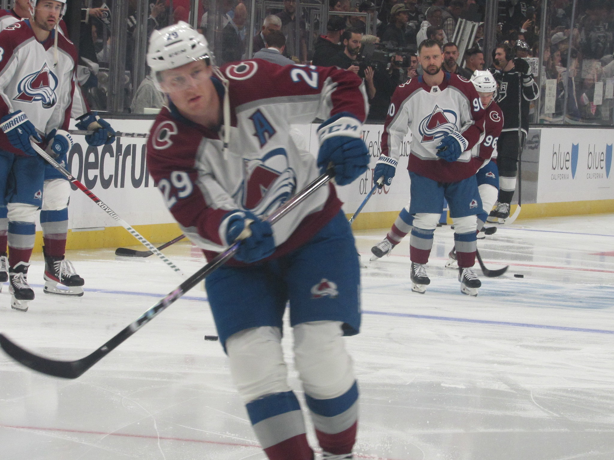

Contenders Watch
Every team believes they have a chance in October. Heading into the 2026-27 season, a handful of teams separate themselves from the pack, and the case for each one looks a little different.
1. Montreal Canadiens
No one predicted a group this young to reach an Eastern Conference Final, and now the Canadiens open the year as the popular pick to go further. The case starts with a Selke Trophy winner in captain Nick Suzuki, a 50-goal scorer in Cole Caufield, and rising stars in Ivan Demidov and Lane Hutson pushing the roster's ceiling even higher. Add strong goaltending from Jakub Dobes and one of the league's better coaching staffs, and Montreal looks built for a deep run rather than a one-year wonder (NHL.com).
2. Colorado Avalanche

Getting swept in last year's conference final is still being felt, but the roster that caused it barely changed. Nathan MacKinnon, Martin Necas, and Cale Makar remain as dangerous as any trio in the league, and the depth behind them is what keeps Colorado near the top of these rankings year after year (NHL.com).
3. Florida Panthers
Back-to-back champions in 2024 and 2025, Florida's run hit a wall last season when an injury-plagued roster missed the 2026 playoffs entirely, a stunning absence for a team that had reached three straight Stanley Cup Finals. The front office responded aggressively by trading for Brady Tkachuk to reunite him with brother Matthew, getting captain Aleksander Barkov back to full health, and reacquiring goaltender Jacob Markstrom after Sergei Bobrovsky's departure. Whether that's enough to push Florida back into real contention is one of the bigger questions in the East this year (NHL.com).
Carolina, Minnesota, Washington, and Vegas round out the group of legitimate contenders, each a tier below the top three but close enough that a hot streak in April could change the conversation entirely (NHL.com).